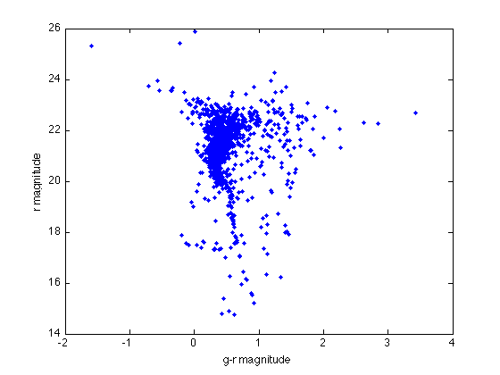
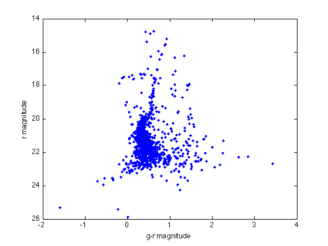
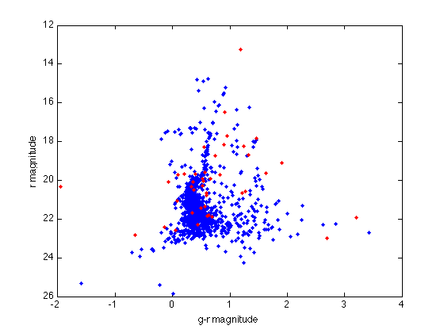

Plotting the HR diagram
In order to plot the HR diagrams for the clusters we first want to extract the relevant data for clarity. We want two arrays containing the red and green magnitudes:
g1 = cluster1data(...); r1 = cluster1data(...);
Now we can make the HR diagram by using these two sets:
figure(1) plot(g1-r1, r1,'b.') xlabel('g-r magnitude') ylabel('r magnitude')
Note that, because of the reverse nature of magnitudes (brighter object has lower value) we need to reverse the y axis:
set(gca, 'YDir', 'reverse')
You can also overplot the second cluster with different color:
g2 = ...; r2 = ...; hold on; plot(g2-r2, r2,'r.')